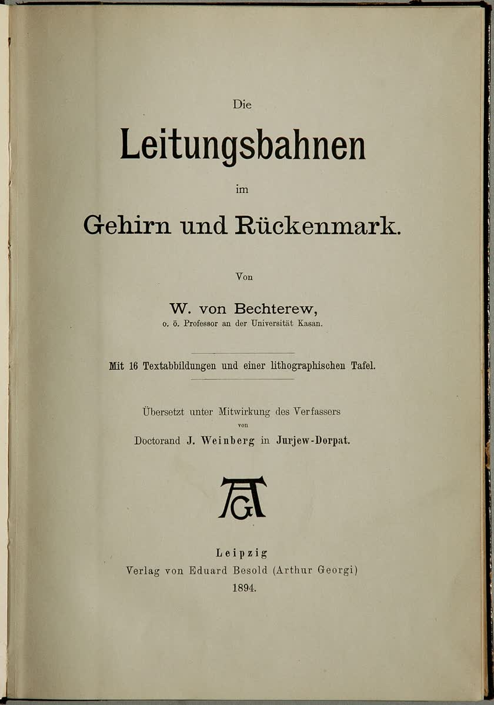
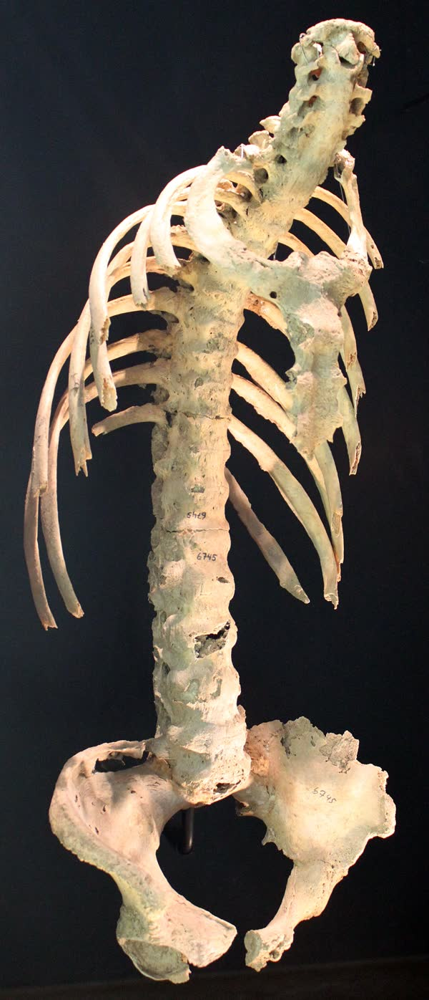

От карты мозга — к «особой форме заболевания»
Читается подряд. Нажми на удар — откроется подробный разбор с источниками.
Владимир Бехтерев родился 1 февраля 1857 года (20 января по старому стилю) в селе Сарали Вятской губернии, в семье станового пристава.Узнать подробнееСвернуть
Отец рано умер, семья жила в Вятке. В 1873 году, окончив семь классов Вятской гимназии, Бехтерев поступил в Медико-хирургическую академию в Петербурге. В 1878 году окончил её, и его оставили при кафедре душевных болезней, в клинике профессора И. П. Мержеевского. Музей истории медицины Кировской области оговаривается: точная дата рождения неизвестна, но большинство источников принимает именно эту.
Источник: Виртуальный музей истории медицины Кировской области, «Владимир Михайлович Бехтерев» (раздел «Персоналии»).
В 1884–1885 годах он шестнадцать месяцев учился в клиниках и лабораториях Берлина, Лейпцига, Парижа, Мюнхена и Вены.Узнать подробнееСвернуть
Он смотрел больных у К. Вестфаля и Ж. Шарко, работал у Э. Дюбуа-Реймона, в лаборатории П. Флексига и в институте К. Людвига, слушал семинар по экспериментальной психологии В. Вундта, бывал у Б. Гуддена и Т. Мейнерта. Только за 1885 год у него вышло 17 работ, пять из них — на немецком языке.
Источник: «Новости украинской психиатрии», «Памяти академика В. М. Бехтерева (к 155-летию со дня рождения)».
С осени 1885 года 28-летний Бехтерев возглавил кафедру душевных болезней Казанского университета и устроил при ней лабораторию.Узнать подробнееСвернуть
Кафедру пришлось создавать заново. Экстраординарным профессором его назначили 3 октября 1885 года, а руководил он ею до октября 1893-го. Биографы пишут, что казанская лаборатория экспериментальной психологии стала второй в Европе после лаборатории Вундта в Лейпциге (1879). Первым делом Бехтерев взялся за строение мозга: без морфологии мозга, писал он, «нельзя обойтись ни одному невропатологу и всякому вообще врачу, претендующему на правильное понимание нервных заболеваний».
Источники: Ярославский государственный медицинский университет, страница о В. М. Бехтереве; «Новости украинской психиатрии», статья к 155-летию; Музей истории медицины Кировской области.
Он описал несколько ядер в стволе мозга; одно из них, верхнее вестибулярное ядро продолговатого мозга, так и называют — «ядро Бехтерева».Узнать подробнееСвернуть
Ещё до Казани Бехтерев изучал органы равновесия и написал работу «Образование наших представлений о пространстве». Среди описанных им участков — ядра в покрышке моста, «полоска Бехтерева» в коре у основания гиппокампа, центральный покрышечный путь. Он нашёл и зону вкуса в коре.
Источники: Ярославский государственный медицинский университет, страница о В. М. Бехтереве; «Новости украинской психиатрии», «Слово об академике В. М. Бехтереве (к 165-летию со дня рождения)».
Кору мозга он сравнивал с картой, где краски участков смешиваются по краям, — а не с мозаикой из отдельных кусков.Узнать подробнееСвернуть
В статье «Физиология двигательной области мозговой коры» (1887) Бехтерев писал: «Кора мозга, быть может, и уподобляется карте, разрисованной отдельными красками по отдельным участкам, но так, что соседние краски, понятно, смешиваются между собой…». У каждой зоны коры своя работа, но резких границ между ними нет. Позже эту мысль развил И. П. Павлов в учении о проекционных и ассоциативных полях коры.
Источник: «Новости украинской психиатрии», «Памяти академика В. М. Бехтерева (к 155-летию со дня рождения)».
Его книгу «Проводящие пути спинного и головного мозга» издали в Германии по-немецки, а немецкий анатом Копш, по словам биографов, сказал: мозг прекрасно знают только двое — Бог и Бехтерев.Узнать подробнееСвернуть

Титульный лист первого немецкого издания «Проводящих путей», Лейпциг, 1894 год. Викисклад, общественное достояние. Книга вышла в 1893 году, немецкий перевод — в Лейпциге в 1894-м; на титуле сказано, что перевод сделан при участии автора. В 1896–1898 годах её дополнили и издали в двух томах: Бехтерев проследил ход пучков в центральной нервной системе и состав белого вещества спинного мозга. В 1900 году за двухтомник Академия наук присудила премию имени К. М. Бэра; награду Бехтереву вручили 29 декабря вместе с И. П. Павловым. Слова «Знают прекрасно устройство мозга только двое: Бог и Бехтерев» биографы приписывают немецкому профессору Ф. Копшу.
Источники: Ярославский государственный медицинский университет; «Новости украинской психиатрии», статьи к 155- и 165-летию; титульный лист издания 1894 года (Викисклад).
В 1892 году журнал «Врач» напечатал его статью «Одеревенелость позвоночника с искривлением его как особая форма заболевания».Узнать подробнееСвернуть
Статья начинается с того, что в последние годы автор наблюдал болезнь, при которой позвоночник выгибается назад и становится неподвижным, а нервная система страдает. В литературе по нервным болезням он не нашёл подробного описания такого своеобразного страдания — и решил описать своих больных сам. Трое из них лечились у него дома. Номер журнала, 36-й за 1892 год, Бехтерев сам назвал в немецкой публикации.
Источник: W. v. Bechterew, «Steifigkeit der Wirbelsäule und ihre Verkrümmung als besondere Erkrankungsform», Neurologisches Centralblatt, 1893, № 13 (1 июля), с. 426–434 — немецкая публикация той же статьи, сноска на с. 433: «Wratsch, 1892, Nr. 36».
Первой была 56-летняя женщина, второй — 52-летняя, третьим — 39-летний составитель поездов: у всех спина медленно сгибалась годами.Узнать подробнееСвернуть
Первую больную мучила тяжесть в затылке; ей стало трудно держать голову, которая всё время клонилась вперёд. Вторая пришла в августе 1890 года из-за сердцебиения и бессонницы, а горб заметила больше десяти лет назад. Третий восемнадцать лет, с 1870 по 1888 год, составлял поезда и часто работал согнувшись; его осмотрели 12 мая 1891 года. Похожее искривление было у матерей всех троих, а у первой — ещё у сестры и дочери. Двое не раз падали и ушибали спину.
Источник: Bechterew, Neurologisches Centralblatt, 1893, с. 426–431, наблюдения I–III.
Сравнив пять случаев, Бехтерев выписал пять общих признаков: неподвижность без заметной боли, дугу в верхней части спины, слабость мышц, онемение кожи и покалывания.Узнать подробнееСвернуть
К трём больным он добавил двух, которых видел раньше. Один, душевнобольной, сгорбился так, что подбородок почти касался груди. Другой страдал ещё и дрожательным параличом. Тяжесть была разной, но Бехтерев не сомневался, что болезнь одна. Вот что было у всех: малая подвижность позвоночника без заметной боли при постукивании и сгибании; дуга назад в верхнегрудном отделе, голова подана вперёд и опущена; слабость мышц туловища, шеи и конечностей; сниженная чувствительность кожи спины; покалывания и боли. У второй больной голова, по его словам, поворачивалась, как флюгер на неподвижной оси.
Источник: Bechterew, Neurologisches Centralblatt, 1893, с. 428 и 431–432.
Через год Бехтерев сам поправил себя: болезнь начинается в самом позвоночнике, а не в ткани вокруг оболочки спинного мозга.Узнать подробнееСвернуть
Находка дняВ немецкой публикации 1893 года есть сноска. В русской статье, признаётся автор, он ошибочно считал началом болезни хроническое воспаление соединительной ткани вокруг оболочки спинного мозга. Теперь он пишет иначе: это самостоятельный хронический процесс в самом позвоночнике, который ведёт к сращению позвонков — анкилозу, а воспаление ткани вокруг оболочки он оставил лишь как вероятное сопутствующее. Этот процесс сращивает позвонки и давит на корешки нервов — отсюда, по Бехтереву, неподвижность, покалывания и боли, слабость мышц. Сам он сравнил его со spondylitis deformans; сегодня болезнь называют анкилозирующим спондилитом.
Источник: Bechterew, Neurologisches Centralblatt, 1893, с. 433 (основной текст и сноска).
Болезнь известна с древности, но первыми её описаниями считают статьи Бехтерева, А. Штрюмпеля (1897) и П. Мари (1898).Узнать подробнееСвернуть

Позвоночник со сросшимися позвонками, окрестности Хайльбронна, начало VI века. Земельный музей Вюртемберга, Штутгарт. Фото Anagoria, Викисклад, CC BY 3.0. Сросшиеся позвоночники находят у египетских мумий. В 1559 году Р. Коломбо описал два таких скелета, в 1693 году Б. Коннор — ещё один. В середине XIX века появились отдельные клинические описания. Немецкий врач А. Штрюмпель ещё в учебнике 1884 года мимоходом упомянул болезнь, при которой без болей срастаются позвоночник и тазобедренные суставы, — он видел два таких случая. В 1897 году он описал её отдельно, а П. Мари — в 1898-м. Название «болезнь Бехтерева» до сих пор в ходу и за пределами России.
Источники: А. Г. Бочкова, НИИ ревматологии РАМН, «Анкилозирующий спондилит» (раздел «История открытия»); A. Strümpell, Lehrbuch der speciellen Pathologie und Therapie der inneren Krankheiten, Bd. 2, Leipzig, 1884 (глава о хроническом суставном ревматизме); обзор «A brief human history of ankylosing spondylitis», Surgical Neurology International, 2022.
В 1893 году Бехтерев переехал в Петербург, в 1907-м основал Психоневрологический институт, а умер в Москве 24 декабря 1927 года.Узнать подробнееСвернуть
В Военно-медицинской академии он возглавил кафедру душевных и нервных болезней и начал создавать первую в России нейрохирургическую операционную. В 1903–1907 годах вышел его семитомник «Основы учения о функциях мозга». Психоневрологический институт он задумал под девизом «познать человека комплексно»; к 1916 году там училось больше семи тысяч студентов. В декабре 1927 года Бехтерев председательствовал на I Всесоюзном съезде невропатологов и психиатров в Москве, а 24 декабря, на третий день съезда, умер.
Источники: «Новости украинской психиатрии», статья к 155-летию; Ярославский государственный медицинский университет; Музей истории медицины Кировской области.